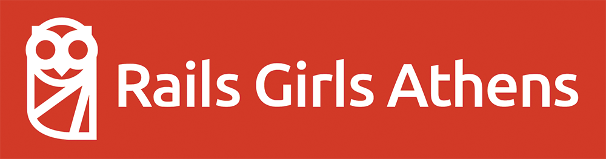

Welcome!
Thanks to our sponsors
Four Athens
@fourathens
Four Athens believes that Athens possesses all of ingredients necessary to create a strong technology startup hub.

Partner Software develops software for the utility industry.

@is3donline
IS3D/Cogent Education makes highly engaging, interactive science educational software for high school students.
Big Nerd Ranch
@bignerdranch
When the Big Nerd Ranch started out, we did one thing and we did it well: we taught programming languages. Now, over a decade later, we’ve expanded to include consulting, software products and an ever-growing library of Big Nerd Ranch books.
@codeschool
Code School is an online learning platform that teaches a variety of programming and web design skills. Courses range from beginner to advanced levels and you get to earn rewards and badges as you learn.
@getvitaminc
Healthcare communication improved.
What is Rails Girls?
@railsgirls

Code is literacy and valuable wherever you work.
Lingua franca of the web - technical literacy is vital.
Not solitary, not mathematical - like any language, immersion is key.
It's not a matter of statistics, but perspective.
She++
Founded in January 2012, she++ was Stanford's first conference on women in technology. In April 2012, we hosted a lineup of inspirational women in tech--from companies such as Google, Facebook, Dropbox, and Pinterest, among others--and 250+ attendees on Stanford's campus.- http://sheplusplus.stanford.edu/
she++: The Documentary from Ellora Israni on Vimeo.
Let's install Rails!

Text Editor
I recommend Sublime Text (http://sublimetext.com), but whatever text editor you use will be fine.
http://guides.railsgirls.com/install/
We have USB drives with XCode and Rails Installer if you need them.
Test in the terminal/command prompt:
$ rails -v
Ask your coaches for help if you need it.

See everyone at 9am tomorrow!
(We will have coffee.)